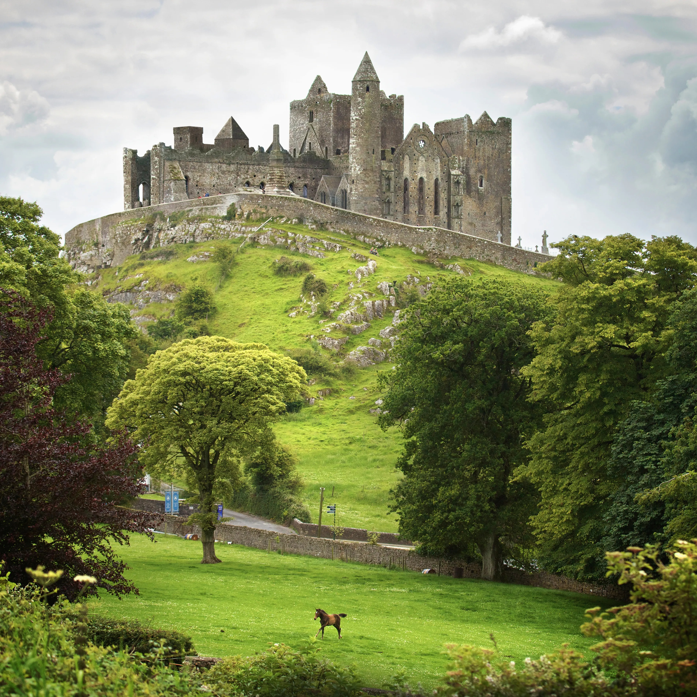
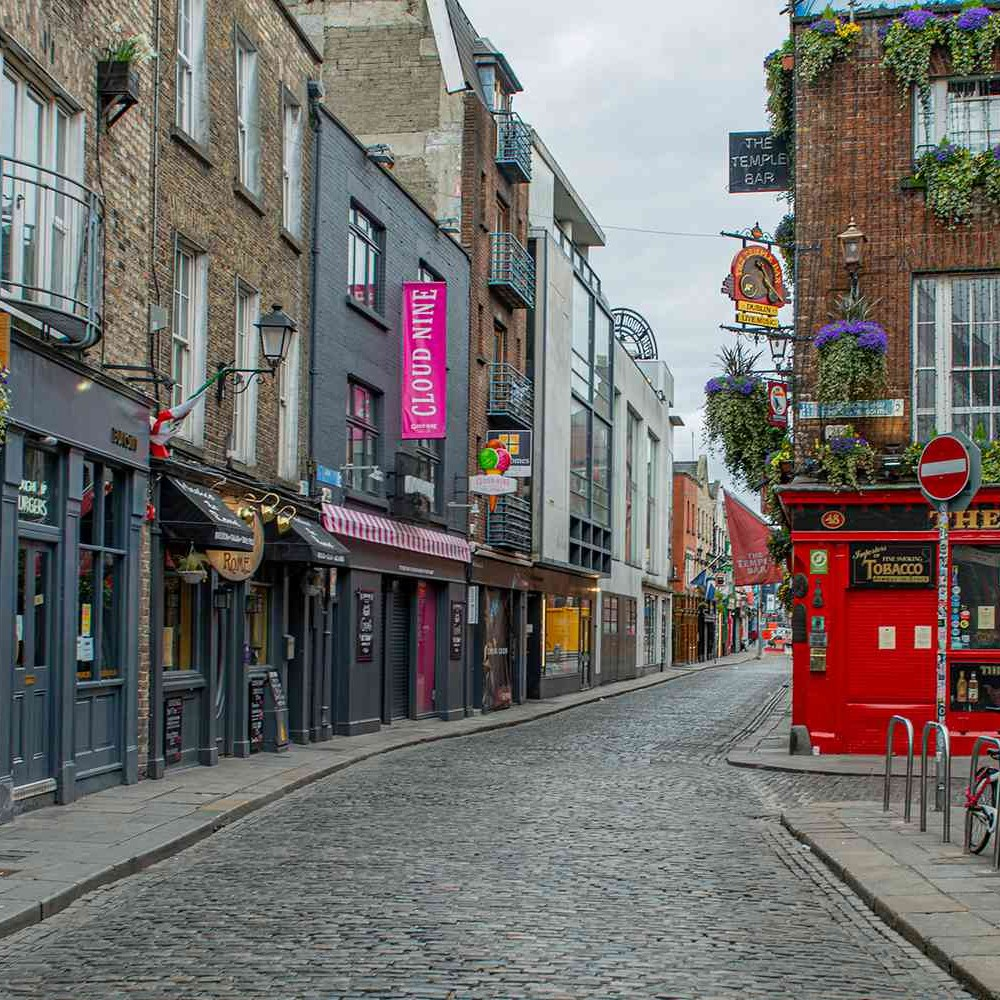

Ireland
Emerald Landscapes and Celtic Dreams
Ireland, often referred to as the Emerald Isle for its lush green landscapes, is a land where myths and legends blend seamlessly with a vibrant contemporary culture. My journey through Ireland was a quest to immerse myself in its Celtic heritage, discover its breathtaking scenery, and relish the warmth and hospitality of its people.
 My Irish adventure commenced in Dublin, the country's capital and a city that resonates with literary history. A visit to Trinity College led me to the Book of Kells, a beautifully illustrated manuscript that dates back to the 9th century. Strolling along the cobbled streets of Temple Bar, I encountered lively pubs where traditional Irish music filled the air. One of my favorite experiences was exploring the Jameson Distillery, where I learned about the art of whiskey-making and sampled a fine glass of Irish whiskey. Dublin was a city where history, culture, and a lively spirit came together in perfect harmony.
A scenic drive brought me to the awe-inspiring Cliffs of Moher on the rugged west coast. Towering 700 feet above the churning Atlantic Ocean, the cliffs offered a dramatic panorama that took my breath away. I embarked on a coastal walk along the cliff's edge, feeling the salty breeze on my face and gazing at colonies of seabirds nesting in the rocky crevices. As I stood at O'Brien's Tower, a 19th-century lookout point, I watched the waves crash against the cliffs and marveled at the sheer beauty and raw power of nature. It was a moment of pure serenity and a reminder of Ireland's unspoiled grandeur.
Galway, known for its vibrant arts scene and traditional music, was my next destination. The cobbled streets of Galway's Latin Quarter echoed with the sounds of fiddles and bodhráns, drawing me into cozy pubs where impromptu sessions of traditional Irish music unfolded. I joined the locals in a lively ceili dance, where the intricate footwork and energetic movements left me exhilarated. It was a joyful celebration of Irish culture and a testament to the enduring spirit of community in this charming city.
 Leaving Galway behind, I embarked on the famous Ring of Kerry, a 179-kilometer circuit through some of Ireland's most breathtaking landscapes. The drive took me through charming villages, verdant hillsides, and pristine lakes. One highlight was the Ladies View, a panoramic viewpoint in Killarney National Park named after Queen Victoria's ladies-in-waiting, who were captivated by its beauty. Here, I admired the tranquil lakes of Killarney framed by the rugged Macgillycuddy's Reeks mountain range. It was a journey through paradise, with every twist and turn revealing a new facet of Ireland's natural splendor.
Crossing the border into Northern Ireland, I arrived in Belfast, a city with a complex history and an inspiring spirit of resilience. A visit to the Titanic Belfast Museum immersed me in the tragic yet fascinating tale of the ill-fated RMS Titanic. Exploring the murals of Belfast's neighborhoods, I gained insight into the city's troubled past and its journey towards reconciliation and peace. Belfast was a testament to the indomitable human spirit and the power of transformation.
My exploration continued along the Antrim Coast to the Giant's Causeway, a geological wonder of 40,000 hexagonal basalt columns formed by volcanic activity. As I descended the stone steps to the shoreline, I felt like I was entering a realm of myth and magic. Walking among the hexagonal pillars, I marveled at the precision of nature's handiwork. According to legend, the Causeway was built by the giant Finn McCool to reach Scotland, and as I gazed across the sea towards Scotland, the story seemed to come alive.
My final stop was Killarney National Park, a realm of enchanted woodlands, pristine lakes, and historic estates. Muckross House, a 19th-century mansion, offered a glimpse into the lavish lifestyles of the Irish gentry. I explored the park's ancient oak forests, where moss-covered trees whispered secrets of centuries gone by. A boat ride on the serene Lough Leane allowed me to soak in the tranquility of this natural haven.
As I concluded my Irish odyssey, I carried with me the echoes of traditional music, the rugged beauty of cliffs and coasts, and the warmth of the Irish people. Ireland, with its rich cultural heritage and stunning landscapes, had left an indelible mark on my heart. I hope that through this journey, you've felt the magic of the Emerald Isle and been inspired to explore its many wonders. Slán go fóill, and until our next adventure, may the spirit of Ireland's legends and landscapes stay with you.